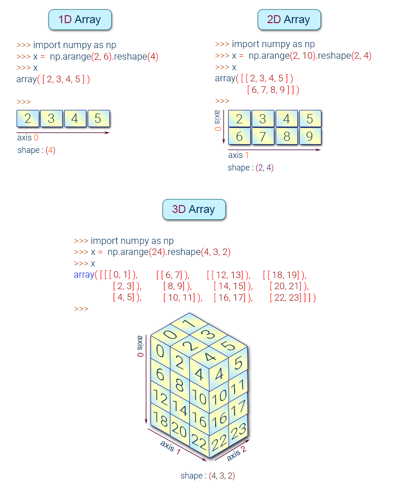

NumPy#
👉 It is a Linear Algebra Library for Python, essential library to perform mathematical and statistical operations in Python.
👉 It provides a high-performance multidimensional array object, and tools for working with these arrays.
👉 NumPy is memory efficiency, meaning it can handle the vast amount of data more accessible than any other library.
👉 It is used for matrix multiplication and reshaping. On top of that, NumPy is fast.
👉 TensorFlow and Scikit learn uses NumPy array to compute the matrix multiplication in the back end.
NumPy Array#
👉 A numpy array is a grid of values, all of the same type, and is indexed by a tuple of nonnegative integers.
👉 The number of dimensions is the rank of the array; the shape of an array is a tuple of integers giving the size of the array along each dimension.
👉 Numpy array is a powerful N-dimensional array object which is in the form of rows and columns. We can initialize NumPy arrays from nested Python lists and access it elements.
NumPy Array Types:#
{kind=link}
Create a NumPy Array#
Simplest way to create an array in Numpy is to use Python List
import numpy as np
my_list = [1,2,3,4]
my_list
[1, 2, 3, 4]
To convert python list to a numpy array by using the object np.array.
numpy_array_from_list = np.array(my_list)
numpy_array_from_list
array([1, 2, 3, 4])
In practice, there is no need to declare a Python List. The operation can be combined.
my_list1 = np.array([1,2,3,4])
my_list1
array([1, 2, 3, 4])
NOTE: Numpy documentation states use of
np.ndarrayto create an array. However, this the recommended method
You can also create a numpy array from a Tuple
my_list2 = np.array (range (1,5))
my_list2
array([1, 2, 3, 4])
Numpy Array basics#
We can initialize numpy arrays from nested Python lists, and access elements using square brackets []:
a = np.array([1,2,3]) # Create a 1D array
print(a)
print(type(a)) # Prints "<class 'numpy.ndarray'>"
[1 2 3]
<class 'numpy.ndarray'>
b = np.array([[9.0,8.0,7.0],[6.0,5.0,4.0]])
print(b)
[[9. 8. 7.]
[6. 5. 4.]]
my_matrix = [[1,2,3],[4,5,6],[7,8,9]]
my_matrix
np.array(my_matrix)
array([[1, 2, 3],
[4, 5, 6],
[7, 8, 9]])
# Get Dimension
a.ndim
1
# Get Shape
b.shape
(2, 3)
# Get Size
a.itemsize
4
# Get Size
b.itemsize
8
# Get total size
a.nbytes # a.nbytes = a.size * a.itemsize
12
# Get number of elements
a.size
3
c = np.array([[True, False], [False, True]])
c
array([[ True, False],
[False, True]])
print(c.size)
print(c.shape)
4
(2, 2)
a = np.array([1, 2, 3]) # Create a 1d array
print(a)
print(type(a)) # Prints "<class 'numpy.ndarray'>"
print(a.shape) # Prints "(3,)"
print(a[0], a[1], a[2]) # Indexing with 3 elements. Prints "1 2 3"
a[0] = 5 # Change an element of the array
print(a) # Prints "[5, 2, 3]"
b = np.array([[1,2,3],[4,5,6]]) # Create a 2d array
print(b)
print(b.shape) # Prints "(2, 3)"
print(b[0, 0], b[0, 1], b[1, 0]) # Prints "1 2 4"
[1 2 3]
<class 'numpy.ndarray'>
(3,)
1 2 3
[5 2 3]
[[1 2 3]
[4 5 6]]
(2, 3)
1 2 4
Array datatypes#
Every numpy array is a grid of elements of the same type. Numpy provides a large set of numeric datatypes that you can use to construct arrays. The full list of NumPy datatype (dtypes) can be found in the NumPy documentation.

The two biggest things to remember are
Missing values (NaN) cast integer or boolean arrays to floats
NumPy arrays only have a single dtype for every element
the object dtype is the fallback
Numpy tries to guess a datatype when you create an array, but functions that construct arrays usually also include an optional argument to explicitly specify the datatype. For example:
a = np.array([1,2,3], dtype='int32') # Create a 1D array with int32 type
print(a)
[1 2 3]
# Get Type
a.dtype
dtype('int32')
b = np.array([[9.0,8.0,7.0],[6.0,5.0,4.0]])
print(b)
b.dtype
[[9. 8. 7.]
[6. 5. 4.]]
dtype('float64')
import numpy as np
x = np.array([1, 2]) # Let numpy choose the datatype
print(x.dtype) # Prints "int64"
x = np.array([1.0, 2.0]) # Let numpy choose the datatype
print(x.dtype) # Prints "float64"
x = np.array([1, 2], dtype=np.int64) # Force a particular datatype
print(x.dtype) # Prints "int64"
int32
float64
int64
Does a NumPy array have a single dtype or multiple dtypes?
NumPy arrays are homogenous: they only have a single dtype (unlike DataFrames). You can have an array that holds mixed types, e.g.
np.array(['a', 1]), but the dtype of that array isobject, which you probably want to avoid.
You can read all about numpy datatypes in this documentation.
Random number#
rand#
Random values in a given shape from a uniform distribution over [0, 1)
np.random.rand(3)
array([0.22672978, 0.55283762, 0.10276143])
np.random.rand(3,5)
array([[0.2559205 , 0.60786967, 0.83770503, 0.45359369, 0.27764243],
[0.38209653, 0.44225798, 0.63158859, 0.81893678, 0.79823164],
[0.69791535, 0.69343173, 0.04763428, 0.1097501 , 0.30920635]])
# Random decimal numbers
np.random.rand(4,2)
#or
#np.random.random_sample(a.shape)
array([[0.55360672, 0.30668723],
[0.93102691, 0.05082974],
[0.23180804, 0.95966987],
[0.68602648, 0.89632087]])
randn#
Return a sample (or samples) from the “standard normal†distribution. Not Uniform.with mean 0 and variance with 1.
np.random.randn(3)
array([-1.33142653, 1.54275813, 0.00616708])
np.random.randn(4,3)
array([[-2.85505447, -0.48048431, -1.98749888],
[-0.43563027, -1.35266299, -0.65628077],
[-0.40015831, -1.14770535, 0.61784629],
[-1.27672348, -0.54777888, 1.51026454]])
randint#
Return random integers from low (inclusive) to high (exclusive).
np.random.randint(2,100)
85
# Random Integer values
np.random.randint(-4,8, size=(3,3))
array([[ 1, 2, 2],
[ 5, 3, 2],
[ 6, -1, 2]])
x = np.random.randint(0, 10, 10)
y = np.random.randint(0, 10, 10)
x, y
(array([9, 3, 3, 7, 5, 8, 4, 0, 0, 7]), array([2, 4, 7, 2, 5, 0, 7, 0, 9, 5]))
It’s also sometimes a more convinient way of writing and thinking about things.
[i + j for i, j in zip(x, y)]
[11, 7, 10, 9, 10, 8, 11, 0, 9, 12]
x + y
array([11, 7, 10, 9, 10, 8, 11, 0, 9, 12])
Array Attributes and Methods#
rana = np.random.randint(1,10,8)
rana
array([5, 9, 9, 2, 2, 3, 6, 1])
max, min, argmax, argmin#
rana
array([5, 9, 9, 2, 2, 3, 6, 1])
rana.max()
9
rana.argmax()
1
rana.min()
1
rana.argmin()
7
Numpy also provides many functions to create arrays:#
# Generating Zeros
np.zeros(5)
array([0., 0., 0., 0., 0.])
# All 0s matrix
np.zeros((2,3)) # pass a tupple
array([[0., 0., 0.],
[0., 0., 0.]])
# Generating Zeros
np.ones(3) # one function
array([1., 1., 1.])
np.ones(1)*5
array([5.])
np.ones((3,3))
array([[1., 1., 1.],
[1., 1., 1.],
[1., 1., 1.]])
# All 1s matrix
np.ones((4,2,2), dtype='int32')
array([[[1, 1],
[1, 1]],
[[1, 1],
[1, 1]],
[[1, 1],
[1, 1]],
[[1, 1],
[1, 1]]])
# Any other number
np.full((2,2), 99)
array([[99, 99],
[99, 99]])
# Any other number (full_like)
np.full_like(a, 4)
#or np.full(a.shape, 4)
array([4, 4, 4])
# The identity matrix
np.identity(5)
array([[1., 0., 0., 0., 0.],
[0., 1., 0., 0., 0.],
[0., 0., 1., 0., 0.],
[0., 0., 0., 1., 0.],
[0., 0., 0., 0., 1.]])
# Repeat an array
arr = np.array([[1,2,3]])
r1 = np.repeat(arr,3, axis=0)
print(r1)
[[1 2 3]
[1 2 3]
[1 2 3]]
import numpy as np
a = np.zeros((2,2)) # Create an array of all zeros
print(a) # Prints "[[ 0. 0.]
# [ 0. 0.]]"
b = np.ones((1,2)) # Create an array of all ones
print(b) # Prints "[[ 1. 1.]]"
c = np.full((2,2), 7) # Create a constant array
print(c) # Prints "[[ 7. 7.]
# [ 7. 7.]]"
d = np.eye(2) # Create a 2x2 identity matrix
print(d) # Prints "[[ 1. 0.]
# [ 0. 1.]]"
e = np.random.random((2,2)) # Create an array filled with random values
print(e) # Might print "[[ 0.91940167 0.08143941]
# [ 0.68744134 0.87236687]]"
[[0. 0.]
[0. 0.]]
[[1. 1.]]
[[7 7]
[7 7]]
[[1. 0.]
[0. 1.]]
[[0.53909609 0.12336799]
[0.93143051 0.39878883]]
#Generate matrix
# 1 1 1 1 1
# 1 0 0 0 1
# 1 0 9 0 1
# 1 1 1 1 1
output = np.ones((5,5))
print(output)
z = np.zeros((3,3))
z[1,1] = 9
print(z)
output[1:-1,1:-1] = z
print(output)
[[1. 1. 1. 1. 1.]
[1. 1. 1. 1. 1.]
[1. 1. 1. 1. 1.]
[1. 1. 1. 1. 1.]
[1. 1. 1. 1. 1.]]
[[0. 0. 0.]
[0. 9. 0.]
[0. 0. 0.]]
[[1. 1. 1. 1. 1.]
[1. 0. 0. 0. 1.]
[1. 0. 9. 0. 1.]
[1. 0. 0. 0. 1.]
[1. 1. 1. 1. 1.]]
You can read about other methods of array creation in this documentation.
Array indexing#
Numpy offers several ways to index into arrays and accessing/changing specific elements, rows, columns, etc.
Slicing: Similar to Python lists, numpy arrays can be sliced. Since arrays may be multidimensional, you must specify a slice for each dimension of the array:
import numpy as np
a = np.arange(0,11)
a
array([ 0, 1, 2, 3, 4, 5, 6, 7, 8, 9, 10])
Indexing a 1D array#
a[2] # Get a value at an index
2
a[1:4] # Get values in a range / slice notation
array([1, 2, 3])
a[:6]
array([0, 1, 2, 3, 4, 5])
a[3:]
array([ 3, 4, 5, 6, 7, 8, 9, 10])
#Slices
slice_a = a[0:5]
slice_a
array([0, 1, 2, 3, 4])
slice_a[:]=100
slice_a
array([100, 100, 100, 100, 100])
a # Change in original array
array([100, 100, 100, 100, 100, 5, 6, 7, 8, 9, 10])
a_copy = a.copy() # creat a copy
a_copy
array([100, 100, 100, 100, 100, 5, 6, 7, 8, 9, 10])
a_copy[:]=200
a_copy
array([200, 200, 200, 200, 200, 200, 200, 200, 200, 200, 200])
a
array([100, 100, 100, 100, 100, 5, 6, 7, 8, 9, 10])
Be careful when copying arrays!!!#
a = np.array([1,2,3])
a
b = a
#b = a.copy()
b[0] = 100
print(a)
[100 2 3]
Indexing a 2D array (matrices)#
# mat = [row,col]
# mat = [row][col]
mat=np.array(([5,10,20],[20,25,30],[35,40,10]))
mat
array([[ 5, 10, 20],
[20, 25, 30],
[35, 40, 10]])
mat[1] #Indexing row
array([20, 25, 30])
mat[2]
array([35, 40, 10])
# Getting individual element value
mat[1][1]
25
mat[1,2] # use common notaion instaed of 2 brackets
30
#array slicing
mat
array([[ 5, 10, 20],
[20, 25, 30],
[35, 40, 10]])
#Shape top row
mat[0]
array([ 5, 10, 20])
#Shape (2,2) from top right corner
mat[:2,1:]
array([[10, 20],
[25, 30]])
#Shape (2,2) from bottom left corner
mat[1:,:2]
array([[20, 25],
[35, 40]])
#Shape bottom row
mat[2]
array([35, 40, 10])
#Shape bottom row
mat[2,:]
array([35, 40, 10])
a = np.array([[1,2,3,4,5,6,7],[8,9,10,11,12,13,14]])
print(a)
[[ 1 2 3 4 5 6 7]
[ 8 9 10 11 12 13 14]]
# Get a specific element [row, column]
a[1, 5] # to select element '13' we need row 2 and element 6. Hence r=1, c=5 (index start from 0)
# or a[1,-2]
13
# Get a specific row
a[0, :] # all columns
array([1, 2, 3, 4, 5, 6, 7])
# Get a specific column
a[:, 2] # all rows
array([ 3, 10])
# Getting a little more fancy [startindex:endindex:stepsize]
a[0, 1:-1:2]
array([2, 4, 6])
a[1,5] = 20 # row 2 and element 6
print(a)
a[:,2] = [1,2]
print(a)
[[ 1 2 3 4 5 6 7]
[ 8 9 10 11 12 20 14]]
[[ 1 2 1 4 5 6 7]
[ 8 9 2 11 12 20 14]]
# 3D example
b = np.array([[[1,2],[3,4]],[[5,6],[7,8]]])
print(b)
[[[1 2]
[3 4]]
[[5 6]
[7 8]]]
# Get specific element (work outside in)
b[0,1,1]
4
# replace
b[:,1,:]
print(b)
[[[1 2]
[3 4]]
[[5 6]
[7 8]]]
b[:,1,:] = [[9,9,9],[8,8]]
print(b)
---------------------------------------------------------------------------
ValueError Traceback (most recent call last)
<ipython-input-34-75075a70c90e> in <module>
----> 1 b[:,1,:] = [[9,9,9],[8,8]]
2 print(b)
ValueError: setting an array element with a sequence. The requested array has an inhomogeneous shape after 1 dimensions. The detected shape was (2,) + inhomogeneous part.
Integer array indexing#
When you index into numpy arrays using slicing, the resulting array view will always be a subarray of the original array. In contrast, integer array indexing allows you to construct arbitrary arrays using the data from another array. Here is an example:
import numpy as np
a = np.array([[1,2], [3, 4], [5, 6]])
print(a)
# An example of integer array indexing.
# The returned array will have shape (3,) and
print(a[[0, 1, 2], [0, 1, 0]]) # Prints "[1 4 5]"
# The above example of integer array indexing is equivalent to this:
print(np.array([a[0, 0], a[1, 1], a[2, 0]])) # Prints "[1 4 5]"
# When using integer array indexing, you can reuse the same
# element from the source array:
print(a[[0, 0], [1, 1]]) # Prints "[2 2]"
# Equivalent to the previous integer array indexing example
print(np.array([a[0, 1], a[0, 1]])) # Prints "[2 2]"
[[1 2]
[3 4]
[5 6]]
[1 4 5]
[1 4 5]
[2 2]
[2 2]
One useful trick with integer array indexing is selecting or mutating one element from each row of a matrix:
import numpy as np
# Create a new array from which we will select elements
a = np.array([[1,2,3], [4,5,6], [7,8,9], [10, 11, 12]])
print(a) # prints "array([[ 1, 2, 3],
# [ 4, 5, 6],
# [ 7, 8, 9],
# [10, 11, 12]])"
# Create an array of indices
b = np.array([0, 2, 0, 1])
# Select one element from each row of a using the indices in b
print(a[np.arange(4), b]) # Prints "[ 1 6 7 11]"
# Mutate one element from each row of a using the indices in b
a[np.arange(4), b] += 10
print(a) # prints "array([[11, 2, 3],
# [ 4, 5, 16],
# [17, 8, 9],
# [10, 21, 12]])
[[ 1 2 3]
[ 4 5 6]
[ 7 8 9]
[10 11 12]]
[ 1 6 7 11]
[[11 2 3]
[ 4 5 16]
[17 8 9]
[10 21 12]]
Boolean array indexing#
Boolean array indexing lets you pick out arbitrary elements of an array. Frequently this type of indexing is used to select the elements of an array that satisfy some condition. Here is an example:
a = np.arange(1,11)
a
array([ 1, 2, 3, 4, 5, 6, 7, 8, 9, 10])
a > 4
array([False, False, False, False, True, True, True, True, True,
True])
bool_a = a>4
bool_a
array([False, False, False, False, True, True, True, True, True,
True])
a[bool_a]
array([ 5, 6, 7, 8, 9, 10])
a[a>2]
array([ 3, 4, 5, 6, 7, 8, 9, 10])
x = 2
a[a>x]
array([ 3, 4, 5, 6, 7, 8, 9, 10])
import numpy as np
a = np.array([[1,2], [3, 4], [5, 6]])
print(a)
bool_idx = (a > 2) # Find the elements of a that are bigger than 2;
# this returns a numpy array of Booleans of the same
# shape as a, where each slot of bool_idx tells
# whether that element of a is > 2.
print(bool_idx) # Prints "[[False False]
# [ True True]
# [ True True]]"
# We use boolean array indexing to construct a rank 1 array
# consisting of the elements of a corresponding to the True values
# of bool_idx
print(a[bool_idx]) # Prints "[3 4 5 6]"
# We can do all of the above in a single concise statement:
print(a[a > 2]) # Prints "[3 4 5 6]"
[[1 2]
[3 4]
[5 6]]
[[False False]
[ True True]
[ True True]]
[3 4 5 6]
[3 4 5 6]
For brevity we have left out a lot of details about numpy array indexing; if you want to know more about Array Indexing you should read this documentation.
Array math#
Basic mathematical functions operate elementwise on arrays, and are available both as operator overloads and as functions in the numpy module:
import numpy as np
a = np.array([0,1,2,3,4,5])
#a = np.arange(0,6)
print(a)
[0 1 2 3 4 5]
a + 2
array([2, 3, 4, 5, 6, 7])
a - 2
array([-2, -1, 0, 1, 2, 3])
a * 2
array([ 0, 2, 4, 6, 8, 10])
a / 2
array([0. , 0.5, 1. , 1.5, 2. , 2.5])
a + a
array([ 0, 2, 4, 6, 8, 10])
a * a
array([ 0, 1, 4, 9, 16, 25])
a - a
array([0, 0, 0, 0, 0, 0])
a/a # Warning on division by zero, but not an error!
<ipython-input-9-1b9ae9b69587>:1: RuntimeWarning: invalid value encountered in true_divide
a/a # Warning on division by zero, but not an error!
array([nan, 1., 1., 1., 1., 1.])
1/a # Also warning, but not an error instead infinity
<ipython-input-10-6f47904706aa>:1: RuntimeWarning: divide by zero encountered in true_divide
1/a # Also warning, but not an error instead infinity
array([ inf, 1. , 0.5 , 0.33333333, 0.25 ,
0.2 ])
b = np.array([1,0,1,0,1,0])
a + b
array([1, 1, 3, 3, 5, 5])
a ** 3
array([ 0, 1, 8, 27, 64, 125], dtype=int32)
Universal Array Functions (Mathematical operations)#
#Square Roots
np.sqrt(a)
array([0. , 1. , 1.41421356, 1.73205081, 2. ,
2.23606798])
#exponential (e^)
np.exp(a)
array([ 1. , 2.71828183, 7.3890561 , 20.08553692,
54.59815003, 148.4131591 ])
np.max(a) #same as arr.max()
5
np.min(a)
0
np.sin(a)
array([ 0. , 0.84147098, 0.90929743, 0.14112001, -0.7568025 ,
-0.95892427])
np.cos(a)
array([ 1. , 0.54030231, -0.41614684, -0.9899925 , -0.65364362,
0.28366219])
import numpy as np
x = np.array([[1,2],[3,4]], dtype=np.float64)
y = np.array([[5,6],[7,8]], dtype=np.float64)
print(x)
print(y)
# Elementwise sum; both produce the array
# [[ 6.0 8.0]
# [10.0 12.0]]
print(x + y)
print(np.add(x, y))
# Elementwise difference; both produce the array
# [[-4.0 -4.0]
# [-4.0 -4.0]]
print(x - y)
print(np.subtract(x, y))
# Elementwise product; both produce the array
# [[ 5.0 12.0]
# [21.0 32.0]]
print(x * y)
print(np.multiply(x, y))
# Elementwise division; both produce the array
# [[ 0.2 0.33333333]
# [ 0.42857143 0.5 ]]
print(x / y)
print(np.divide(x, y))
# Elementwise square root; produces the array
# [[ 1. 1.41421356]
# [ 1.73205081 2. ]]
print(np.sqrt(x))
[[1. 2.]
[3. 4.]]
[[5. 6.]
[7. 8.]]
[[ 6. 8.]
[10. 12.]]
[[ 6. 8.]
[10. 12.]]
[[-4. -4.]
[-4. -4.]]
[[-4. -4.]
[-4. -4.]]
[[ 5. 12.]
[21. 32.]]
[[ 5. 12.]
[21. 32.]]
[[0.2 0.33333333]
[0.42857143 0.5 ]]
[[0.2 0.33333333]
[0.42857143 0.5 ]]
[[1. 1.41421356]
[1.73205081 2. ]]
Note: that unlike MATLAB,
*is elementwise multiplication, not matrix multiplication. We instead use thedotfunction to compute inner products of vectors, to multiply a vector by a matrix, and to multiply matrices.dotis available both as a function in the numpy module and as an instance method of array objects:
### Dot product: product of two arrays
f = np.array([1,2])
g = np.array([4,5])
### 1*4+2*5
np.dot(f, g)
14
import numpy as np
x = np.array([[1,2],[3,4]])
y = np.array([[5,6],[7,8]])
v = np.array([9,10])
w = np.array([11, 12])
# Inner product of vectors; both produce 219
print(v.dot(w))
print(np.dot(v, w))
# Matrix / vector product; both produce the rank 1 array [29 67]
print(x.dot(v))
print(np.dot(x, v))
# Matrix / matrix product; both produce the rank 2 array
# [[19 22]
# [43 50]]
print(x.dot(y))
print(np.dot(x, y))
219
219
[29 67]
[29 67]
[[19 22]
[43 50]]
[[19 22]
[43 50]]
Numpy provides many useful functions for performing computations on arrays; one of the most useful is sum:
import numpy as np
x = np.array([[1,2],[3,4]])
print(np.sum(x)) # Compute sum of all elements; prints "10"
print(np.sum(x, axis=0)) # Compute sum of each column; prints "[4 6]"
print(np.sum(x, axis=1)) # Compute sum of each row; prints "[3 7]"
10
[4 6]
[3 7]
You can find the full list of mathematical functions provided by numpy in this documentation.
Apart from computing mathematical functions using arrays, we frequently need to reshape or otherwise manipulate data in arrays. The simplest example of this type of operation is transposing a matrix; to transpose a matrix, simply use the T attribute of an array object:
import numpy as np
x = np.array([[1,2], [3,4]])
print(x) # Prints "[[1 2]
# [3 4]]"
print(x.T) # Prints "[[1 3]
# [2 4]]"
# Note that taking the transpose of a rank 1 array does nothing:
v = np.array([1,2,3])
print(v) # Prints "[1 2 3]"
print(v.T) # Prints "[1 2 3]"
[[1 2]
[3 4]]
[[1 3]
[2 4]]
[1 2 3]
[1 2 3]
Numpy provides many more functions for manipulating arrays; you can see the full list in the documentation.
Matrix Multiplication#
The Numpy matmul() function is used to return the matrix product of 2 arrays.
a = np.ones((2,3))
print(a)
b = np.full((3,2), 2)
print(b)
np.matmul(a,b) # matmul() function is used to return the matrix product of 2 arrays.
[[1. 1. 1.]
[1. 1. 1.]]
[[2 2]
[2 2]
[2 2]]
array([[6., 6.],
[6., 6.]])
### Matmul: matruc product of two arrays
h = [[1,2],[3,4]]
i = [[5,6],[7,8]]
### 1*5+2*7 = 19
np.matmul(h, i)
array([[19, 22],
[43, 50]])
Determinant#
Last but not least, if you need to compute the determinant, you can use np.linalg.det().
Note: numpy takes care of the dimension.
# Find the determinant
c = np.identity(3)
np.linalg.det(c)
1.0
## Determinant 2*2 matrix
5*8-7*6
np.linalg.det(i)
-1.999999999999999
## Reference docs (https://docs.scipy.org/doc/numpy/reference/routines.linalg.html)
# Determinant
# Trace
# Singular Vector Decomposition
# Eigenvalues
# Matrix Norm
# Inverse
# Etc...
Broadcasting#
Broadcasting is a powerful mechanism that allows numpy to work with arrays of different shapes when performing arithmetic operations. Frequently we have a smaller array and a larger array, and we want to use the smaller array multiple times to perform some operation on the larger array.
For example, suppose that we want to add a constant vector to each row of a matrix. We could do it like this:
import numpy as np
# We will add the vector v to each row of the matrix x,
# storing the result in the matrix y
x = np.array([[1,2,3], [4,5,6], [7,8,9], [10, 11, 12]])
v = np.array([1, 0, 1])
y = np.empty_like(x) # Create an empty matrix with the same shape as x
# Add the vector v to each row of the matrix x with an explicit loop
for i in range(4):
y[i, :] = x[i, :] + v
# Now y is the following
# [[ 2 2 4]
# [ 5 5 7]
# [ 8 8 10]
# [11 11 13]]
print(y)
[[ 2 2 4]
[ 5 5 7]
[ 8 8 10]
[11 11 13]]
This works; however when the matrix x is very large, computing an explicit loop in Python could be slow. Note that adding the vector v to each row of the matrix x is equivalent to forming a matrix vv by stacking multiple copies of v vertically, then performing elementwise summation of x and vv. We could implement this approach like this:
import numpy as np
# We will add the vector v to each row of the matrix x,
# storing the result in the matrix y
x = np.array([[1,2,3], [4,5,6], [7,8,9], [10, 11, 12]])
v = np.array([1, 0, 1])
vv = np.tile(v, (4, 1)) # Stack 4 copies of v on top of each other
print(vv) # Prints "[[1 0 1]
# [1 0 1]
# [1 0 1]
# [1 0 1]]"
y = x + vv # Add x and vv elementwise
print(y) # Prints "[[ 2 2 4
# [ 5 5 7]
# [ 8 8 10]
# [11 11 13]]"
[[1 0 1]
[1 0 1]
[1 0 1]
[1 0 1]]
[[ 2 2 4]
[ 5 5 7]
[ 8 8 10]
[11 11 13]]
Numpy broadcasting allows us to perform this computation without actually creating multiple copies of v. Consider this version, using broadcasting:
import numpy as np
# We will add the vector v to each row of the matrix x,
# storing the result in the matrix y
x = np.array([[1,2,3], [4,5,6], [7,8,9], [10, 11, 12]])
v = np.array([1, 0, 1])
y = x + v # Add v to each row of x using broadcasting
print(y) # Prints "[[ 2 2 4]
# [ 5 5 7]
# [ 8 8 10]
# [11 11 13]]"
[[ 2 2 4]
[ 5 5 7]
[ 8 8 10]
[11 11 13]]
Explanation:
The line y = x + v works even though x has shape (4, 3) and v has shape (3,) due to broadcasting; this line works as if v actually had shape (4, 3), where each row was a copy of v, and the sum was performed elementwise.
Broadcasting two arrays together follows these rules:
If the arrays do not have the same rank, prepend the shape of the lower rank array with 1s until both shapes have the same length.
The two arrays are said to be compatible in a dimension if they have the same size in the dimension, or if one of the arrays has size 1 in that dimension.
The arrays can be broadcast together if they are compatible in all dimensions.
After broadcasting, each array behaves as if it had shape equal to the elementwise maximum of shapes of the two input arrays.
In any dimension where one array had size 1 and the other array had size greater than 1, the first array behaves as if it were copied along that dimension
If this explanation does not make sense, try reading the explanation from this documentation or this explanation.
Functions that support broadcasting are known as universal functions. You can find the list of all universal functions in this documentation.
Here are some applications of broadcasting:
import numpy as np
# Compute outer product of vectors
v = np.array([1,2,3]) # v has shape (3,)
w = np.array([4,5]) # w has shape (2,)
# To compute an outer product, we first reshape v to be a column
# vector of shape (3, 1); we can then broadcast it against w to yield
# an output of shape (3, 2), which is the outer product of v and w:
# [[ 4 5]
# [ 8 10]
# [12 15]]
print(np.reshape(v, (3, 1)) * w)
# Add a vector to each row of a matrix
x = np.array([[1,2,3], [4,5,6]])
# x has shape (2, 3) and v has shape (3,) so they broadcast to (2, 3),
# giving the following matrix:
# [[2 4 6]
# [5 7 9]]
print(x + v)
# Add a vector to each column of a matrix
# x has shape (2, 3) and w has shape (2,).
# If we transpose x then it has shape (3, 2) and can be broadcast
# against w to yield a result of shape (3, 2); transposing this result
# yields the final result of shape (2, 3) which is the matrix x with
# the vector w added to each column. Gives the following matrix:
# [[ 5 6 7]
# [ 9 10 11]]
print((x.T + w).T)
# Another solution is to reshape w to be a column vector of shape (2, 1);
# we can then broadcast it directly against x to produce the same
# output.
print(x + np.reshape(w, (2, 1)))
# Multiply a matrix by a constant:
# x has shape (2, 3). Numpy treats scalars as arrays of shape ();
# these can be broadcast together to shape (2, 3), producing the
# following array:
# [[ 2 4 6]
# [ 8 10 12]]
print(x * 2)
[[ 4 5]
[ 8 10]
[12 15]]
[[2 4 6]
[5 7 9]]
[[ 5 6 7]
[ 9 10 11]]
[[ 5 6 7]
[ 9 10 11]]
[[ 2 4 6]
[ 8 10 12]]
Why is broadcasting useful?
Broadcasting typically makes your code more concise and faster, so you should strive to use it where possible. It lets you perform operations between arrays that are compatable, but not nescessarily identical, in shape. This makes your code cleaner.
Arrays reorganizing#
asarray()#
The asarray() function is used when you want to convert an input to an array. The input could be a lists, tuple, ndarray, etc.
Syntax:
numpy.asarray(data, dtype=None, order=None)[source]
data: Data that you want to convert to an arraydtype: This is an optional argument. If not specified, the data type is inferred from the input dataOrder: Default isCwhich is an essential row style. Other option isF(Fortan-style)
# Consider the following 2-D matrix with four rows and four columns filled by 1
import numpy as np
a = np.matrix(np.ones((4,4)))
If you want to change the value of the matrix, you cannot. The reason is, it is not possible to change a copy.
np.array(a)[2]=3
print(a) # value won't change in result
[[1. 1. 1. 1.]
[1. 1. 1. 1.]
[1. 1. 1. 1.]
[1. 1. 1. 1.]]
Matrix is immutable. You can use asarray if you want to add modification in the original array. Let’s see if any change occurs when you want to change the value of the third rows with the value 2
np.asarray(a)[2]=2 # np.asarray(A): converts the matrix A to an array
print(a)
[[1. 1. 1. 1.]
[1. 1. 1. 1.]
[2. 2. 2. 2.]
[1. 1. 1. 1.]]
arange()#
The arange() is an inbuilt numpy function that returns an ndarray object containing evenly spaced values within a defined interval. For instance, you want to create values from 1 to 10; you can use arange() function.
Syntax:
numpy.arange(start, stop,step)
start: Start of intervalstop: End of intervalstep: Spacing between values. Default step is 1
# Example 1:
import numpy as np
np.arange(1, 11)
array([ 1, 2, 3, 4, 5, 6, 7, 8, 9, 10])
If you want to change the step, you can add a third number in the parenthesis. It will change the step.
# Example 2:
import numpy as np
np.arange(1, 14, 4)
array([ 1, 5, 9, 13])
np.arange(0,11,2) # even no by adding a step size
array([ 0, 2, 4, 6, 8, 10])
np.arange(1,11,2) # odd no
array([1, 3, 5, 7, 9])
Reshape Data#
In some occasions, you need to reshape the data from wide to long. You can use the reshape function for this.
Syntax:
numpy.reshape(a, newShape, order='C')
a: Arraythat you want to reshapenewShape: The new desires shapeorder: Default isCwhich is an essential row style.
import numpy as np
e = np.array([(1,2,3), (4,5,6)])
print(e)
e.reshape(3,2)
[[1 2 3]
[4 5 6]]
array([[1, 2],
[3, 4],
[5, 6]])
Broadcasting with array reorganizing#
It’s super cool and super useful. The one-line explanation is that when doing elementwise operations, things expand to the “correct†shape.
# add a scalar to a 1-d array
x = np.arange(5)
print('x: ', x)
print('x+1:', x + 1, end='\n\n')
y = np.random.uniform(size=(2, 5))
print('y: ', y, sep='\n')
print('y+1:', y + 1, sep='\n')
x: [0 1 2 3 4]
x+1: [1 2 3 4 5]
y:
[[0.20040757 0.96248829 0.29534113 0.14204329 0.00786338]
[0.68572271 0.22357762 0.88618684 0.91174698 0.87380356]]
y+1:
[[1.20040757 1.96248829 1.29534113 1.14204329 1.00786338]
[1.68572271 1.22357762 1.88618684 1.91174698 1.87380356]]
Since x is shaped (5,) and y is shaped (2,5) we can do operations between them.
x * y
array([[0. , 0.96248829, 0.59068226, 0.42612988, 0.03145352],
[0. , 0.22357762, 1.77237368, 2.73524094, 3.49521424]])
Without broadcasting we’d have to manually reshape our arrays, which quickly gets annoying.
x.reshape(1, -1).repeat(2, axis=0) * y
array([[0. , 0.96248829, 0.59068226, 0.42612988, 0.03145352],
[0. , 0.22357762, 1.77237368, 2.73524094, 3.49521424]])
before = np.array([[1,2,3,4],[5,6,7,8]])
print(before)
after = before.reshape((2,4))
print(after)
[[1 2 3 4]
[5 6 7 8]]
[[1 2 3 4]
[5 6 7 8]]
Flatten Data#
When you deal with some neural network like convnet, you need to flatten the array. You can use flatten().
Syntax:
numpy.flatten(order='C')
a: Arraythat you want to reshapenewShape: The new desires shapeorder: Default isCwhich is an essential row style.
e.flatten()
array([1, 2, 3, 4, 5, 6])
What is hstack?#
With hstack you can appened data horizontally. This is a very convinient function in Numpy. Lets study it with an example:
## Horitzontal Stack
import numpy as np
f = np.array([1,2,3])
g = np.array([4,5,6])
print('Horizontal Append:', np.hstack((f, g)))
Horizontal Append: [1 2 3 4 5 6]
# Horizontal stack
h1 = np.ones((2,4))
h2 = np.zeros((2,2))
np.hstack((h1,h2))
array([[1., 1., 1., 1., 0., 0.],
[1., 1., 1., 1., 0., 0.]])
What is vstack?#
With vstack you can appened data vertically. Lets study it with an example:
## Vertical Stack
import numpy as np
f = np.array([1,2,3])
g = np.array([4,5,6])
print('Vertical Append:', np.vstack((f, g)))
Vertical Append: [[1 2 3]
[4 5 6]]
# Vertically stacking vectors
v1 = np.array([1,2,3,4])
v2 = np.array([5,6,7,8])
np.vstack([v1,v2,v1,v2])
array([[1, 2, 3, 4],
[5, 6, 7, 8],
[1, 2, 3, 4],
[5, 6, 7, 8]])
Generate Random Numbers#
To generate random numbers for Gaussian distribution use:
Syntax:
numpy.random.normal(loc, scale, size)
loc: the mean. The center of distributionscale: standard deviation.size: number of returns
## Generate random number from normal distribution
normal_array = np.random.normal(5, 0.5, 10)
print(normal_array)
[4.73370838 5.02319487 5.03247675 4.63238643 5.20491465 4.23379671
4.65235094 4.03461004 4.81788758 5.40603744]
Linspace#
Linspace gives evenly spaced samples.
Syntax:
numpy.linspace(start, stop, num, endpoint)
start: Start of sequencestop: End of sequencenum: Number of samples to generate. Default is 50endpoint: IfTrue(default), stop is the last value. IfFalse, stop value is not included.
# Example:
import numpy as np
np.linspace(0,10,6)
array([ 0., 2., 4., 6., 8., 10.])
# Example: For instance, it can be used to create 10 values from 1 to 5 evenly spaced.
import numpy as np
np.linspace(1.0, 5.0, num=10)
array([1. , 1.44444444, 1.88888889, 2.33333333, 2.77777778,
3.22222222, 3.66666667, 4.11111111, 4.55555556, 5. ])
If you do not want to include the last digit in the interval, you can set endpoint to False
np.linspace(1.0, 5.0, num=5, endpoint=False)
array([1. , 1.8, 2.6, 3.4, 4.2])
LogSpace#
LogSpace returns even spaced numbers on a log scale. Logspace has the same parameters as np.linspace.
Syntax:
numpy.logspace(start, stop, num, endpoint)
start: Start of sequencestop: End of sequencenum: Number of samples to generate. Default is 50endpoint: IfTrue(default), stop is the last value. IfFalse, stop value is not included.
# Example:
np.logspace(3.0, 4.0, num=4)
array([ 1000. , 2154.43469003, 4641.58883361, 10000. ])
Finaly, if you want to check the memory size of an element in an array, you can use .itemsize
x = np.array([1,2,3], dtype=np.complex128)
x.itemsize
16
Statistics#
NumPy has quite a few useful statistical functions for finding minimum, maximum, percentile standard deviation and variance, etc from the given elements in the array. The functions are explained as follows −
Numpy is equipped with the robust statistical function as listed below:
Function |
Numpy |
|---|---|
|
np.min() |
|
np.max() |
|
np.mean() |
|
np.median() |
|
np.std() |
# Consider the following Array
import numpy as np
normal_array = np.random.normal(5, 0.5, 10)
print(normal_array)
[4.57057605 5.76249894 4.09935016 5.38336447 4.96652011 5.29402596
4.79025614 6.00232788 5.49574452 5.60059908]
# Example:Statistical function
### Min
print(np.min(normal_array))
### Max
print(np.max(normal_array))
### Mean
print(np.mean(normal_array))
### Median
print(np.median(normal_array))
### Sd
print(np.std(normal_array))
4.099350157876355
6.002327879593869
5.196526332130161
5.338695217273813
0.5550161930871431
stats = np.array([[1,2,3],[4,5,6]])
stats
array([[1, 2, 3],
[4, 5, 6]])
np.min(stats)
1
np.max(stats, axis=1)
array([3, 6])
np.sum(stats, axis=0)
array([5, 7, 9])
Miscellaneous#
Load Data from File#
you can download the “data.txt†from here
filedata = np.genfromtxt('data.txt', delimiter=',')
filedata = filedata.astype('int32') # you can also change type to 'int64'
print(filedata)
[[ 1 13 21 11 196 75 4 3 34 6 7 8 0 1 2 3 4 5]
[ 3 42 12 33 766 75 4 55 6 4 3 4 5 6 7 0 11 12]
[ 1 22 33 11 999 11 2 1 78 0 1 2 9 8 7 1 76 88]]
Boolean Masking and Advanced Indexing#
filedata >50
array([[False, False, False, False, True, True, False, False, False,
False, False, False, False, False, False, False, False, False],
[False, False, False, False, True, True, False, True, False,
False, False, False, False, False, False, False, False, False],
[False, False, False, False, True, False, False, False, True,
False, False, False, False, False, False, False, True, True]])
print(filedata)
filedata[filedata >50] # '[]' will display the value of data point from the dataset
[[ 1 13 21 11 196 75 4 3 34 6 7 8 0 1 2 3 4 5]
[ 3 42 12 33 766 75 4 55 6 4 3 4 5 6 7 0 11 12]
[ 1 22 33 11 999 11 2 1 78 0 1 2 9 8 7 1 76 88]]
array([196, 75, 766, 75, 55, 999, 78, 76, 88])
print(filedata)
np.any(filedata > 50, axis = 0) # axis=0 refers to columns and axis=1 refers to rows in this dataset
[[ 1 13 21 11 196 75 4 3 34 6 7 8 0 1 2 3 4 5]
[ 3 42 12 33 766 75 4 55 6 4 3 4 5 6 7 0 11 12]
[ 1 22 33 11 999 11 2 1 78 0 1 2 9 8 7 1 76 88]]
array([False, False, False, False, True, True, False, True, True,
False, False, False, False, False, False, False, True, True])
print(filedata)
np.all(filedata > 50, axis = 0) # '.all' refers to all the data points in row/column (based on axis=0 or axis=1).
[[ 1 13 21 11 196 75 4 3 34 6 7 8 0 1 2 3 4 5]
[ 3 42 12 33 766 75 4 55 6 4 3 4 5 6 7 0 11 12]
[ 1 22 33 11 999 11 2 1 78 0 1 2 9 8 7 1 76 88]]
array([False, False, False, False, True, False, False, False, False,
False, False, False, False, False, False, False, False, False])
print(filedata)
(((filedata > 50) & (filedata < 100)))
[[ 1 13 21 11 196 75 4 3 34 6 7 8 0 1 2 3 4 5]
[ 3 42 12 33 766 75 4 55 6 4 3 4 5 6 7 0 11 12]
[ 1 22 33 11 999 11 2 1 78 0 1 2 9 8 7 1 76 88]]
array([[False, False, False, False, False, True, False, False, False,
False, False, False, False, False, False, False, False, False],
[False, False, False, False, False, True, False, True, False,
False, False, False, False, False, False, False, False, False],
[False, False, False, False, False, False, False, False, True,
False, False, False, False, False, False, False, True, True]])
print(filedata)
(~((filedata > 50) & (filedata < 100))) # '~' means not
[[ 1 13 21 11 196 75 4 3 34 6 7 8 0 1 2 3 4 5]
[ 3 42 12 33 766 75 4 55 6 4 3 4 5 6 7 0 11 12]
[ 1 22 33 11 999 11 2 1 78 0 1 2 9 8 7 1 76 88]]
array([[ True, True, True, True, True, False, True, True, True,
True, True, True, True, True, True, True, True, True],
[ True, True, True, True, True, False, True, False, True,
True, True, True, True, True, True, True, True, True],
[ True, True, True, True, True, True, True, True, False,
True, True, True, True, True, True, True, False, False]])
### You can index with a list in NumPy
a = np.array([1,2,3,4,5,6,7,8,9])
a [[1,2,8]] #indexes
array([2, 3, 9])
Summary#
NumPy Basics#
Operator |
Description |
|---|---|
|
1d array |
|
2d array |
|
range array |
Placeholders#
Operator |
Description |
|---|---|
|
Add evenly spaced values btw interval to array of length |
|
Create and array filled with zeros |
|
Creates an array filled with ones |
|
Creates random array |
|
Creates an empty array |
Array#
Operator |
Description |
|---|---|
|
Dimensions (Rows,Columns) |
|
Length of Array |
|
Number of Array Dimensions |
|
Data Type |
|
Converts to Data Type |
|
Type of Array |
Copying/Sorting#
Operator |
Description |
|---|---|
|
Creates copy of array |
|
Creates deep copy of array |
|
Sorts an array |
|
Sorts axis of array |
Array Manipulation#
Adding or Removing Elements#
Operator |
Description |
|---|---|
|
Append items to array |
|
Insert items into array at axis 0 or 1 |
|
Resize array to shape(2,4) |
|
Deletes items from array |
Combining Arrays#
Operator |
Description |
|---|---|
|
Split an array into multiple sub-arrays. |
|
Split an array in sub-arrays of (nearly) identical size |
|
Split the array horizontally at 3rd index |
More#
Operator |
Description |
|---|---|
|
Flattens a 2d array to 1d |
|
Transpose array |
|
Transpose array |
|
Inverse of a given matrix |
Slicing and Subsetting#
Operator |
Description |
|---|---|
|
1d array at index i |
|
2d array at index[i][j] |
|
Boolean Indexing, see Tricks |
|
Select items of index 0, 1 and 2 |
|
Select items of rows 0 and 1 at column 1 |
|
Select items of row 0 (equals array[0:1, :]) |
|
Select items of row 1 |
|
array[1,…] |
|
Reverses array |
Mathematics#
Operations#
Operator |
Description |
|---|---|
|
Addition |
|
Subtraction |
|
Division |
|
Multiplication |
|
Square Root |
|
Element-wise sine |
|
Element-wise cosine |
|
Element-wise natural log |
|
Dot product |
|
Roots of a given polynomial coefficients |
Comparison#
Operator |
Description |
|---|---|
|
Equal |
|
Not equal |
|
Smaller than |
|
Greater than |
|
Smaller than or equal |
|
Greater than or equal |
|
Array-wise comparison |
Basic Statistics#
Operator |
Description |
|---|---|
|
Mean |
|
Median |
|
Correlation Coefficient |
|
Standard Deviation |
More#
Operator |
Description |
|---|---|
|
Array-wise sum |
|
Array-wise minimum value |
|
Maximum value of specified axis |
|
Cumulative sum of specified axis |